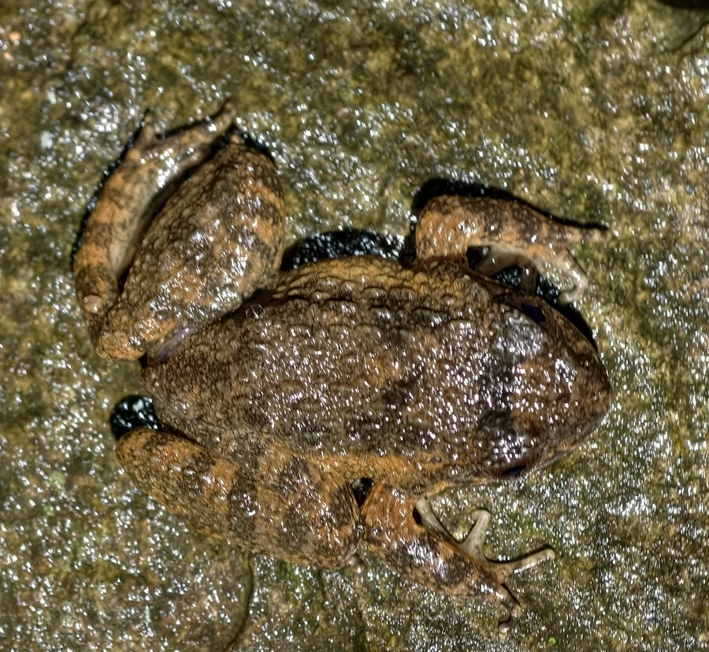

两栖动物 · 动物界
棘腹蛙 Quasipaa boulengeri

中国南方山溪中的大型蛙类，腹部布满黑色棘刺，雄蛙胸部棘刺尤为发达，叫声洪亮，已被列为易危物种。
- 分类
- 门脊索动物门纲两栖纲目无尾目科叉舌蛙科属棘蛙属
- 栖息环境
- 山区溪流、深潭、瀑布旁的岩石缝隙与洞穴
- 地理分布
- 中国四川、湖北、湖南、贵州、广西等地山区
- 保护级别
- IUCN 易危（VU）；中国“三有”保护动物
物种志
棘腹蛙体长可达 8–12 厘米，雌蛙略大，是体型较大的蛙类。头部宽扁，吻端圆钝，背部皮肤粗糙，呈黄褐色或灰褐色，散布深色斑纹；最显著的特征是腹部皮肤上密布黑色小棘刺，雄蛙胸部的棘刺更粗大，繁殖期尤为明显。
它生活在海拔较高的山区溪流、深潭和瀑布附近，白天藏在石缝或水边洞穴中，夜间捕食昆虫、溪蟹、虾和小鱼。繁殖期在 5–8 月，雄蛙发出低沉的“咚、咚”声，雌蛙将卵产在溪流石下或水草上，蝌蚪吸附在石面上，以适应急流环境。棘腹蛙肉质鲜美，长期被捕捉食用，加上溪流污染和水利工程，野生种群明显减少，中国已将其列入“三有”名录并加强保护。
形态与习性
- 食性昆虫、溪蟹、虾和小鱼
- 体长约 8–12 cm
- 繁殖5–8 月产卵于溪流石下或水草上
- 活动节律夜行性，白天藏在石缝洞穴中
- 特征腹部密布黑色棘刺，雄蛙胸部棘刺发达
- 寿命野外约 6–8 年
趣味知识
- 棘腹蛙腹部布满黑色小棘，雄蛙胸部的棘刺在繁殖期更发达。
- 它生活在山溪石缝间，蝌蚪能吸附在石面上抵抗急流。
- 因肉质鲜美被大量捕捉，野生棘腹蛙已被列为易危物种。